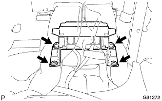

Airbag sensor ASSY removal |
| 1. Handling / Work precautions |
reference)| 2. Battery minor Starminal cut off |
| 3. Instrument panel finish panel LWR CTR removed |
 |
Clip <c> 2 places, 8 claws, and remove the instrument panel finish panel LWR CTR.
Cut the connector of the power outlet socket and remove the instrument panel finish panel LWR CTR.
Remove the three screws and remove the instrument Katsup holder.
| 4. Air Duct RR No.1 Cut off (cold district specification car) |
| 5. Air duct RR No.2 separated (cold region specification car) |
| 6. The airbag sensor ASSY is removed |
Cut the sensor connector.
|  |
Use a torx soketsu trench (T40) to remove the four torx bolts and remove the airbatsg sensor ASSY CTR.